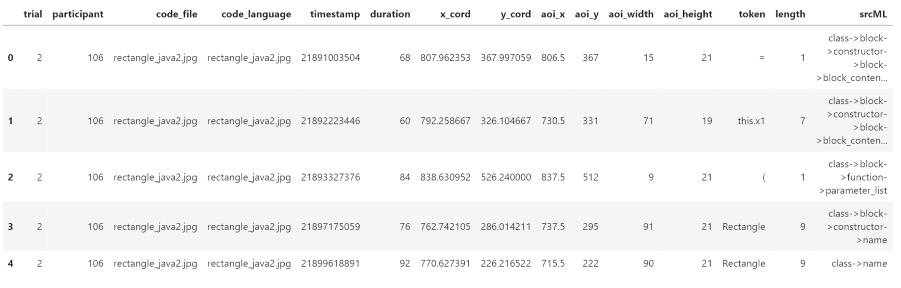

Experiment Class
View Source
class Experiment: """Each subject data represents an experiment with multiple trials""" def __init__(self, trial: list, eye_tracker: str, filetype: str): """Initialize each experiment with raw data file This method splits data into a bunch of trials based on JPG Parameters ---------- trial: list raw data TSV file. eye_tracker: str type of eye tracker used filetype : str type of the file, e.g. "tsv" or "asc """ self.trial = trial self.eye_tracker = eye_tracker self.filetype = filetype def get_number_of_trials(self): """Returns the number of trials in the experiment Returns ------- int number of trials in the experiment""" return len(self.trial) def get_eye_tracker(self): """Returns the name of eye tracker in the experiment Returns ------- str name of the eye tracker """ return self.eye_tracker def idt_classifier(raw_fixations, minimum_duration=50, sample_duration=4, maximum_dispersion=25): """I-DT classifier based on page 296 of eye tracker manual: https://psychologie.unibas.ch/fileadmin/user_upload/psychologie/Forschung/N-Lab/SMI_iView_X_Manual.pdf Notes: remember that some data is MSG for mouse clicks. some records are invalid with value -1. read right eye data only. Parameters ---------- raw_fixations : list a list of fixations information containing timestamp, x_cord, and y_cord minimum_duration : int, optional minimum duration for a fixation in milliseconds, less than minimum is considered noise. set to 50 milliseconds by default sample_duration : int, optional Sample duration in milliseconds, this is 4 milliseconds based on this eye tracker maximum_dispersion : int, optional maximum distance from a group of samples to be considered a single fixation. Set to 25 pixels by default Returns ------- list a list where each element is a list of timestamp, duration, x_cord, and y_cord """ # Create moving window based on minimum_duration window_size = int(math.ceil(minimum_duration / sample_duration)) window_x = [] window_y = [] filter_fixation = [] # Go over all SMPs in trial data for timestamp, x_cord, y_cord in raw_fixations: # Filter (skip) coordinates outside of the screen 1920×1080 px if x_cord < 0 or y_cord < 0 or x_cord > 1920 or y_cord > 1080: continue # Add sample if it appears to be valid window_x.append(x_cord) window_y.append(y_cord) # Calculate dispersion = [max(x) - min(x)] + [max(y) - min(y)] dispersion = (max(window_x) - min(window_x)) + (max(window_y) - min(window_y)) # If dispersion is above maximum_dispersion if dispersion > maximum_dispersion: # Then the window does not represent a fixation # Pop last item in window window_x.pop() window_y.pop() # Add fixation to fixations if window is not empty (size >= window_size) if len(window_x) == len(window_y) and len(window_x) > window_size: # The fixation is registered at the centroid of the window points filter_fixation.append( [timestamp, len(window_x) * 4, statistics.mean(window_x), statistics.mean(window_y)]) window_x = [] window_y = [] return filter_fixation def read_SMIRed250(filename, filetype, minimum_duration=50, sample_duration=4, maximum_dispersion=25): """Read tsv file from SMI Red 250 eye tracker Parameters ---------- filename : str name of the tsv file filetype : str type of the file, e.g. "tsv" minimum_duration : int, optional minimum duration for a fixation in milliseconds, less than minimum is considered noise. set to 50 milliseconds by default. sample_duration : int, optional Sample duration in milliseconds, this is 4 milliseconds based on this eye tracker. maximum_dispersion : int, optional maximum distance from a group of samples to be considered a single fixation. Set to 25 pixels by default. Returns ------- Experiment an Experiment object from SMIRed250 data """ # Read raw data file from EMIP dataset tsv_file = open(filename) print("parsing file:", filename) trials = [] text = tsv_file.read() text_lines = text.split('\n') active = False # Indicates whether samples are being recorded in trials # The goal is to skip metadata in the file trial_id = 0 participant_id = filename.split('/')[-1].split('_')[0] image = "" samples = [] raw_fixations = [] for line in text_lines: token = line.split("\t") if len(token) < 3: continue if active: # Filter MSG samples if any exist, or R eye is inValid if token[1] == "SMP" and token[27] != "-1": # Get x and y for each sample (right eye only) # [23] R POR X [px] '0.00', # [24] R POR Y [px] '0.00', samples.append(token) raw_fixations.append([int(token[0]), float(token[23]), float(token[24])]) if token[1] == "MSG" and token[3].find(".jpg") != -1: if active: filter_fixations = idt_classifier(raw_fixations=raw_fixations, minimum_duration=minimum_duration, sample_duration=sample_duration, maximum_dispersion=maximum_dispersion) # TODO saccades fixations = {} count = 0 for timestamp, duration, x_cord, y_cord in filter_fixations: fixations[count] = Fixation(trial_id=trial_id, participant_id=participant_id, timestamp=timestamp, duration=duration, x_cord=x_cord, y_cord=y_cord, token="", pupil=0) count += 1 trials.append(Trial(trial_id=trial_id, participant_id=participant_id, image=image, fixations=fixations, saccades={}, blinks={}, samples=samples, eye_tracker="SMIRed250")) trial_id += 1 image = token[3].split(' ')[-1] # Message: vehicle_java2.jpg samples = [] raw_fixations = [] active = True # Adds the last trial filter_fixations = idt_classifier(raw_fixations=raw_fixations, minimum_duration=minimum_duration, sample_duration=sample_duration, maximum_dispersion=maximum_dispersion) fixations = {} count = 0 for timestamp, duration, x_cord, y_cord in filter_fixations: fixations[count] = Fixation(trial_id=trial_id, participant_id=participant_id, timestamp=timestamp, duration=duration, x_cord=x_cord, y_cord=y_cord, token="", pupil=0) count += 1 trials.append(Trial(trial_id=trial_id, participant_id=participant_id, image=image, fixations=fixations, saccades={}, blinks={}, samples=samples, eye_tracker="SMIRed250")) return Experiment(trial=trials, eye_tracker="SMIRed250", filetype=filetype) def read_EyeLink1000(filename, filetype): """Read asc file from Eye Link 1000 eye tracker Parameters ---------- filename : str name of the asc file filetype : str filetype of the file, e.g. "tsv" Returns ------- Experiment an Experiment object of EyeLink1000 data """ asc_file = open(filename) print("parsing file:", filename) trials = [] text = asc_file.read() text_lines = text.split('\n') trial_id = -1 participant_id = filename.split('.')[0] samples = [] fixations = {} saccades = {} blinks = {} count = 0 for line in text_lines: token = line.split() if not token: continue if "TRIALID" in token: # List of eye events if trial_id == -1: trial_id = int(token[-1]) continue # Read image location index = str(int(trial_id) + 1) experiment = participant_id.split('/')[-1] location = 'runtime/dataviewer/' + experiment + '/graphics/VC_' + index + '.vcl' with open(location, 'r') as file: image = file.readlines()[1].split()[-3].split('/')[-1] # Append fixations and saccades list here trials.append(Trial(trial_id=trial_id, participant_id=participant_id, image=image, fixations=fixations, saccades=saccades, blinks=blinks, samples=samples, eye_tracker="EyeLink1000")) fixations = {} saccades = {} blinks = {} samples = [] count = 0 trial_id = int(token[-1]) if token[0] == "EFIX": timestamp = int(token[2]) duration = int(token[4]) x_cord = float(token[5]) y_cord = float(token[6]) pupil = int(token[7]) fixations[count] = Fixation(trial_id=trial_id, participant_id=participant_id, timestamp=timestamp, duration=duration, x_cord=x_cord, y_cord=y_cord, token="", pupil=pupil) samples.append('EFIX' + ' '.join(token)) count += 1 if token[0] == "ESACC": timestamp = int(token[2]) duration = int(token[4]) x_cord = float(token[5]) if token[5] != '.' else 0.0 y_cord = float(token[6]) if token[6] != '.' else 0.0 x1_cord = float(token[7]) if token[7] != '.' else 0.0 y1_cord = float(token[8]) if token[8] != '.' else 0.0 amplitude = float(token[9]) peak_velocity = int(token[10]) saccades[count] = Saccade(trial_id=trial_id, participant_id=participant_id, timestamp=timestamp, duration=duration, x_cord=x_cord, y_cord=y_cord, x1_cord=x1_cord, y1_cord=y1_cord, amplitude=amplitude, peak_velocity=peak_velocity) samples.append('ESACC' + ' '.join(token)) count += 1 if token[0] == "EBLINK": timestamp = int(token[2]) duration = int(token[4]) blinks[count] = Blink(trial_id=trial_id, participant_id=participant_id, timestamp=timestamp, duration=duration) samples.append('EBLINK' + ' '.join(token)) count += 1 # Read image location index = str(int(trial_id) + 1) experiment = participant_id.split('/')[-1] location = 'runtime/dataviewer/' + experiment + '/graphics/VC_' + index + '.vcl' with open(location, 'r') as file: image = file.readlines()[1].split()[-3].split('/')[-1] # Add the last trial trials.append(Trial(trial_id=trial_id, participant_id=participant_id, image=image, fixations=fixations, saccades=saccades, blinks=blinks, samples=samples, eye_tracker="EyeLink1000")) asc_file.close() return Experiment(trial=trials, eye_tracker="EyeLink1000", filetype=filetype) def find_background_color(img): """Private function that identifies the background color of the image Parameters ---------- img : PIL.Image a PIL (pillow fork) Image object Returns ------- str the color of the background of the image """ img = img.convert('1') width, height = img.size color_result = [] box_size = min(width, height) // 20 # Move a tiny rectangle box to obtain most common color for x, y in zip(range(0, width, box_size), range(0, height, box_size)): box = (x, y, x + box_size, y + box_size) minimum, maximum = img.crop(box).getextrema() color_result.append(minimum) color_result.append(maximum) # Analyze and determine the background color if color_result.count(255) > color_result.count(0): bg_color = 'white' else: bg_color = 'black' return bg_color def find_aoi(image=None, image_path=None, img=None, level="sub-line", margin_height=4, margin_width=7): """Find Area of Interest in the given image and store the aoi attributes in a Pandas Dataframe Parameters ---------- image : str filename for the image, e.g. "vehicle_java.jpg" image_path : str path for all images, e.g. "emip_dataset/stimuli/" img : PIL.Image, optional PIL.Image object if user chooses to input an PIL image object level : str, optional level of detection in AOIs, "line" for each line as an AOI or "sub-line" for each token as an AOI margin_height : int, optional marginal height when finding AOIs, use smaller number for tight text layout margin_width : int, optional marginal width when finding AOIs, use smaller number for tight text layout Returns ------- pandas.DataFrame a pandas DataFrame of area of interest detected by the method """ if img is None: if image is None or image_path is None: return img = Image.open(image_path + image).convert('1') else: img = img.convert('1') width, height = img.size # Detect the background color bg_color = find_background_color(img) left, right = 0, width vertical_result, upper_bounds, lower_bounds = [], [], [] # Move the detecting rectangle from the top to the bottom of the image for upper in range(height - margin_height): lower = upper + margin_height box = (left, upper, right, lower) minimum, maximum = img.crop(box).getextrema() if upper > 1: if bg_color == 'black': if vertical_result[-1][3] == 0 and maximum == 255: # Rectangle detects white color for the first time in a while -> Start of one line upper_bounds.append(upper) if vertical_result[-1][3] == 255 and maximum == 0: # Rectangle detects black color for the first time in a while -> End of one line lower_bounds.append(lower) elif bg_color == 'white': if vertical_result[-1][2] == 255 and minimum == 0: # Rectangle detects black color for the first time in a while -> Start of one line upper_bounds.append(upper) if vertical_result[-1][2] == 0 and minimum == 255: # Rectangle detects white color for the first time in a while -> End of one line lower_bounds.append(lower) # Storing all detection result vertical_result.append([upper, lower, minimum, maximum]) final_result = [] line_count = 1 # Iterate through each line of code from detection for upper_bound, lower_bound in list(zip(upper_bounds, lower_bounds)): # Reset all temporary result for the next line horizontal_result, left_bounds, right_bounds = [], [], [] # Move the detecting rectangle from the left to the right of the image for left in range(width - margin_width): right = left + margin_width box = (left, upper_bound, right, lower_bound) minimum, maximum = img.crop(box).getextrema() if left > 1: if bg_color == 'black': if horizontal_result[-1][3] == 0 and maximum == 255: # Rectangle detects black color for the first time in a while -> Start of one word left_bounds.append(left) if horizontal_result[-1][3] == 255 and maximum == 0: # Rectangle detects white color for the first time in a while -> End of one word right_bounds.append(right) elif bg_color == 'white': if horizontal_result[-1][2] == 255 and minimum == 0: # Rectangle detects black color for the first time in a while -> Start of one word left_bounds.append(left) if horizontal_result[-1][2] == 0 and minimum == 255: # Rectangle detects white color for the first time in a while -> End of one word right_bounds.append(right) # Storing all detection result horizontal_result.append([left, right, minimum, maximum]) if level == 'sub-line': part_count = 1 for left, right in list(zip(left_bounds, right_bounds)): final_result.append( ['sub-line', f'line {line_count} part {part_count}', left, upper_bound, right, lower_bound]) part_count += 1 elif level == 'line': final_result.append( ['line', f'line {line_count}', left_bounds[0], upper_bound, right_bounds[-1], lower_bound]) line_count += 1 # Format pandas dataframe columns = ['kind', 'name', 'x', 'y', 'width', 'height', 'image'] aoi = pd.DataFrame(columns=columns) for entry in final_result: kind, name, x, y, x0, y0 = entry width = x0 - x height = y0 - y image = image # For better visualization x += margin_width / 2 width -= margin_width value = [kind, name, x, y, width, height, image] dic = dict(zip(columns, value)) aoi = aoi.append(dic, ignore_index=True) return aoi def draw_aoi(aoi, image, image_path): """Draws AOI rectangles on to an image. Parameters ---------- aoi : pandas.DataFrame a pandas DataFrame containing rectangle attributes representing areas of interest (AOIs) image : str filename for the image where AOI rectangles will be imposed, e.g. "vehicle_java.jpg" image_path : str path for all images, e.g. "emip_dataset/stimuli/" Returns ------- PIL.Image a PIL image where AOIs have been drawn as rectangles """ img = Image.open(image_path + image).convert('1') bg_color = find_background_color(img) outline = {'white': '#000000', 'black': '#ffffff'} # copy original image rect_image = img.copy() draw = ImageDraw.Draw(rect_image) # loop over rectangles and draw them for row in aoi.iterrows(): x_coordinate = row[1]['x'] y_coordinate = row[1]['y'] height = row[1]['height'] width = row[1]['width'] draw.rectangle([(x_coordinate, y_coordinate), (x_coordinate + width - 1, y_coordinate + height - 1)], outline=outline[bg_color]) return rect_image def add_tokens_to_AOIs(file_path, aois_raw): """Adds tokens from code files to aois dataframe and returns it. Parameters ---------- file_path : str path to directory where code files are stored. In EMIP this is "emip_stimulus_programs" aois_raw : pandas.Dataframe the dataframe where AOIs are stored. Returns ------- pandas.DataFrame a dataframe of AOIs with token information """ image_name = aois_raw["image"][1] # rectangle files if image_name == "rectangle_java.jpg": file_name = "Rectangle.java" if image_name == "rectangle_java2.jpg": file_name = "Rectangle.java" if image_name == "rectangle_python.jpg": file_name = "Rectangle.py" if image_name == "rectangle_scala.jpg": file_name = "Rectangle.scala" # vehicle files if image_name == "vehicle_java.jpg": file_name = "Vehicle.java" if image_name == "vehicle_java2.jpg": file_name = "Vehicle.java" if image_name == "vehicle_python.jpg": file_name = "vehicle.py" if image_name == "vehicle_scala.jpg": file_name = "Vehicle.scala" code_file = open(file_path + file_name) code_text = code_file.read() code_line = code_text.replace('\t', '').replace(' ', '').replace(' ', '').split('\n') filtered_line = [] for line in code_line: if len(line) != 0: filtered_line.append(line.split(' ')) # after the code file has been tokenized and indexed # we can attach tokens to correct AOI aois_raw = aois_raw[aois_raw.kind == "sub-line"].copy() tokens = [] for location in aois_raw["name"].iteritems(): line_part = location[1].split(' ') line_num = int(line_part[1]) part_num = int(line_part[3]) # print(line_part, filtered_line[line_num - 1]) tokens.append(filtered_line[line_num - 1][part_num - 1]) aois_raw["token"] = tokens if aois_raw[aois_raw['token'] == '']['name'].count() != 0: print("Error in adding tokens, some tokens are missing!") return aois_raw def add_srcml_to_AOIs(aois_raw, srcML_path): """Adds srcML tags to AOIs dataframe and returns it. Check https://www.srcml.org/ for more information about srcML The files: rectangle.tsv and vehicle.tsv should be in the same directory as the code. Parameters ---------- aois_raw : pandas.Dataframe the dataframe where AOIs are stored srcML_path : string the path of the srcML tags file Returns ------- pandas.DataFrame AOI dataframe with srcML """ image_name = aois_raw["image"][1] # srcML rectangle files if image_name == "rectangle_java.jpg": file_name = "rectangle.tsv" if image_name == "rectangle_java2.jpg": file_name = "rectangle.tsv" if image_name == "rectangle_python.jpg": aois_raw["srcML_tag"] = 'na' return aois_raw if image_name == "rectangle_scala.jpg": aois_raw["srcML_tag"] = 'na' return aois_raw # srcML vehicle files if image_name == "vehicle_java.jpg": file_name = "vehicle.tsv" if image_name == "vehicle_java2.jpg": file_name = "vehicle.tsv" if image_name == "vehicle_python.jpg": aois_raw["srcML_tag"] = 'na' return aois_raw if image_name == "vehicle_scala.jpg": aois_raw["srcML_tag"] = 'na' return aois_raw srcML_table = pd.read_csv(srcML_path + file_name, sep='\t') aois_raw = aois_raw[aois_raw.kind == "sub-line"].copy() # after the srcML file has been recognized # we can attach tokens to correct AOI tags = [] for location in aois_raw["name"].iteritems(): found = False for srcML_row in srcML_table.itertuples(index=True, name='Pandas'): # stimulus_file token AOI syntactic_context if srcML_row.AOI == location[1]: tags.append(srcML_row.syntactic_context) found = True if not found: tags.append("na") aois_raw["srcML_tag"] = tags return aois_raw def overlap(fix, AOI, radius=25): """Checks if fixation is within radius distance or over an AOI. Returns True/False. Parameters ---------- fix : Fixation A single fixation in a trial being considered for overlapping with the AOI AOI : pandas.DataFrame contains AOI #kind name x y width height local_id image token radius : int, optional radius around AOI to consider fixations in it within the AOI. default is 25 pixel since the fixation filter groups samples within 25 pixels. Returns ------- bool whether it overlaps """ box_x = AOI.x - (radius / 2) box_y = AOI.y - (radius / 2) box_w = AOI.width + (radius / 2) box_h = AOI.height + (radius / 2) return box_x <= fix.x_cord <= box_x + box_w and box_y <= fix.y_cord <= box_y + box_h def hit_test(trial, aois_tokens, radius=25): """Checks if fixations are within AOI with a fixation radius of 25 px (since each fix is a sum of samples within 25px) Parameters ---------- trial : Trial contains fixations and other metadata (trial#, participant, code_file, code_language) - fixation includes timestamp, duration, x_cord, y_cord aois_tokens : pandas.Dataframe contains each AOI location and dimension and token text radius : int, optional radius of circle using in hit test Returns ------- pandas.DataFrame DataFrame with a record representing each fixation, each record contains: trial, participant, code_file, code_language, timestamp, duration, x_cord, y_cord, token, length """ header = ["trial", "participant", "code_file", "code_language", "timestamp", "duration", "x_cord", "y_cord", "aoi_x", "aoi_y", "aoi_width", "aoi_height", "token", "length", "srcML"] result = pd.DataFrame(columns=header) print("all fixations:", len(trial.get_fixations())) for fix in trial.get_fixations().values(): for row in aois_tokens.itertuples(index=True, name='Pandas'): # kind name x y width height local_id image token if overlap(fix, row, radius): df = pd.DataFrame([[fix.trial_id, fix.participant_id, row.image, row.image, fix.timestamp, fix.duration, fix.x_cord, fix.y_cord, row.x, row.y, row.width, row.height, row.token, len(row.token), row.srcML_tag], ], columns=header) result = result.append(df, ignore_index=True) return result def EMIP_dataset(path, sample_size=216): """Import the EMIP dataset Parameters ---------- path : str path to EMIP dataset raw data directory, e.g. '../../emip_dataset/rawdata/' sample_size : int, optional the number of subjects to be processed, the default is 216 Returns ------- dict a dictionary of experiments where the key is the subject ID """ subject = {} count = 0 # go over .tsv files in the rawdata directory add files and count them # r = root, d = directories, f = files for r, d, f in os.walk(path): for file in f: if '.tsv' in file: participant_id = file.split('/')[-1].split('_')[0] if subject.get(participant_id, -1) == -1: subject[participant_id] = read_SMIRed250(os.path.join(r, file), filetype="tsv") else: print("Error, experiment already in dictionary") count += 1 # breaks after sample_size if count == sample_size: break return subject def AlMadi_dataset(path, sample_size=216): """Import the Al Madi's dataset Parameters ---------- path : str path to Al Madi's dataset raw data directory, e.g. '../../AlMadi2018/' sample_size : int, optional the number of subjects to be processed, the default is 216 Returns ------- dict a dictionary of experiments where the key is the subject ID """ subject = {} count = 0 # go over .tsv files in the rawdata directory add files and count them # r = root, d = directories, f = files for r, d, f in os.walk(path): for file in f: if '.asc' in file: participant_id = file.split('.')[0] if subject.get(participant_id, -1) == -1: subject[participant_id] = read_EyeLink1000(os.path.join(r, file), filetype="asc") else: print("Error, experiment already in dictionary") count += 1 # breaks after sample_size if count == sample_size: break return subject
View Source
class Experiment: """Each subject data represents an experiment with multiple trials""" def __init__(self, trial: list, eye_tracker: str, filetype: str): """Initialize each experiment with raw data file This method splits data into a bunch of trials based on JPG Parameters ---------- trial: list raw data TSV file. eye_tracker: str type of eye tracker used filetype : str type of the file, e.g. "tsv" or "asc """ self.trial = trial self.eye_tracker = eye_tracker self.filetype = filetype def get_number_of_trials(self): """Returns the number of trials in the experiment Returns ------- int number of trials in the experiment""" return len(self.trial) def get_eye_tracker(self): """Returns the name of eye tracker in the experiment Returns ------- str name of the eye tracker """ return self.eye_tracker
Each subject data represents an experiment with multiple trials
View Source
def __init__(self, trial: list, eye_tracker: str, filetype: str): """Initialize each experiment with raw data file This method splits data into a bunch of trials based on JPG Parameters ---------- trial: list raw data TSV file. eye_tracker: str type of eye tracker used filetype : str type of the file, e.g. "tsv" or "asc """ self.trial = trial self.eye_tracker = eye_tracker self.filetype = filetype
Initialize each experiment with raw data file This method splits data into a bunch of trials based on JPG
Parameters
trial: list raw data TSV file.
eye_tracker: str type of eye tracker used
filetype : str type of the file, e.g. "tsv" or "asc
View Source
def get_number_of_trials(self): """Returns the number of trials in the experiment Returns ------- int number of trials in the experiment""" return len(self.trial)
Returns the number of trials in the experiment
Returns
int number of trials in the experiment
View Source
def get_eye_tracker(self): """Returns the name of eye tracker in the experiment Returns ------- str name of the eye tracker """ return self.eye_tracker
Returns the name of eye tracker in the experiment
Returns
str name of the eye tracker
View Source
def idt_classifier(raw_fixations, minimum_duration=50, sample_duration=4, maximum_dispersion=25): """I-DT classifier based on page 296 of eye tracker manual: https://psychologie.unibas.ch/fileadmin/user_upload/psychologie/Forschung/N-Lab/SMI_iView_X_Manual.pdf Notes: remember that some data is MSG for mouse clicks. some records are invalid with value -1. read right eye data only. Parameters ---------- raw_fixations : list a list of fixations information containing timestamp, x_cord, and y_cord minimum_duration : int, optional minimum duration for a fixation in milliseconds, less than minimum is considered noise. set to 50 milliseconds by default sample_duration : int, optional Sample duration in milliseconds, this is 4 milliseconds based on this eye tracker maximum_dispersion : int, optional maximum distance from a group of samples to be considered a single fixation. Set to 25 pixels by default Returns ------- list a list where each element is a list of timestamp, duration, x_cord, and y_cord """ # Create moving window based on minimum_duration window_size = int(math.ceil(minimum_duration / sample_duration)) window_x = [] window_y = [] filter_fixation = [] # Go over all SMPs in trial data for timestamp, x_cord, y_cord in raw_fixations: # Filter (skip) coordinates outside of the screen 1920×1080 px if x_cord < 0 or y_cord < 0 or x_cord > 1920 or y_cord > 1080: continue # Add sample if it appears to be valid window_x.append(x_cord) window_y.append(y_cord) # Calculate dispersion = [max(x) - min(x)] + [max(y) - min(y)] dispersion = (max(window_x) - min(window_x)) + (max(window_y) - min(window_y)) # If dispersion is above maximum_dispersion if dispersion > maximum_dispersion: # Then the window does not represent a fixation # Pop last item in window window_x.pop() window_y.pop() # Add fixation to fixations if window is not empty (size >= window_size) if len(window_x) == len(window_y) and len(window_x) > window_size: # The fixation is registered at the centroid of the window points filter_fixation.append( [timestamp, len(window_x) * 4, statistics.mean(window_x), statistics.mean(window_y)]) window_x = [] window_y = [] return filter_fixation
I-DT classifier based on page 296 of eye tracker manual: https://psychologie.unibas.ch/fileadmin/user_upload/psychologie/Forschung/N-Lab/SMI_iView_X_Manual.pdf
Notes:
remember that some data is MSG for mouse clicks.
some records are invalid with value -1.
read right eye data only.
Parameters
raw_fixations : list a list of fixations information containing timestamp, x_cord, and y_cord
minimum_duration : int, optional minimum duration for a fixation in milliseconds, less than minimum is considered noise. set to 50 milliseconds by default
sample_duration : int, optional Sample duration in milliseconds, this is 4 milliseconds based on this eye tracker
maximum_dispersion : int, optional maximum distance from a group of samples to be considered a single fixation. Set to 25 pixels by default
Returns
list a list where each element is a list of timestamp, duration, x_cord, and y_cord
View Source
def read_SMIRed250(filename, filetype, minimum_duration=50, sample_duration=4, maximum_dispersion=25): """Read tsv file from SMI Red 250 eye tracker Parameters ---------- filename : str name of the tsv file filetype : str type of the file, e.g. "tsv" minimum_duration : int, optional minimum duration for a fixation in milliseconds, less than minimum is considered noise. set to 50 milliseconds by default. sample_duration : int, optional Sample duration in milliseconds, this is 4 milliseconds based on this eye tracker. maximum_dispersion : int, optional maximum distance from a group of samples to be considered a single fixation. Set to 25 pixels by default. Returns ------- Experiment an Experiment object from SMIRed250 data """ # Read raw data file from EMIP dataset tsv_file = open(filename) print("parsing file:", filename) trials = [] text = tsv_file.read() text_lines = text.split('\n') active = False # Indicates whether samples are being recorded in trials # The goal is to skip metadata in the file trial_id = 0 participant_id = filename.split('/')[-1].split('_')[0] image = "" samples = [] raw_fixations = [] for line in text_lines: token = line.split("\t") if len(token) < 3: continue if active: # Filter MSG samples if any exist, or R eye is inValid if token[1] == "SMP" and token[27] != "-1": # Get x and y for each sample (right eye only) # [23] R POR X [px] '0.00', # [24] R POR Y [px] '0.00', samples.append(token) raw_fixations.append([int(token[0]), float(token[23]), float(token[24])]) if token[1] == "MSG" and token[3].find(".jpg") != -1: if active: filter_fixations = idt_classifier(raw_fixations=raw_fixations, minimum_duration=minimum_duration, sample_duration=sample_duration, maximum_dispersion=maximum_dispersion) # TODO saccades fixations = {} count = 0 for timestamp, duration, x_cord, y_cord in filter_fixations: fixations[count] = Fixation(trial_id=trial_id, participant_id=participant_id, timestamp=timestamp, duration=duration, x_cord=x_cord, y_cord=y_cord, token="", pupil=0) count += 1 trials.append(Trial(trial_id=trial_id, participant_id=participant_id, image=image, fixations=fixations, saccades={}, blinks={}, samples=samples, eye_tracker="SMIRed250")) trial_id += 1 image = token[3].split(' ')[-1] # Message: vehicle_java2.jpg samples = [] raw_fixations = [] active = True # Adds the last trial filter_fixations = idt_classifier(raw_fixations=raw_fixations, minimum_duration=minimum_duration, sample_duration=sample_duration, maximum_dispersion=maximum_dispersion) fixations = {} count = 0 for timestamp, duration, x_cord, y_cord in filter_fixations: fixations[count] = Fixation(trial_id=trial_id, participant_id=participant_id, timestamp=timestamp, duration=duration, x_cord=x_cord, y_cord=y_cord, token="", pupil=0) count += 1 trials.append(Trial(trial_id=trial_id, participant_id=participant_id, image=image, fixations=fixations, saccades={}, blinks={}, samples=samples, eye_tracker="SMIRed250")) return Experiment(trial=trials, eye_tracker="SMIRed250", filetype=filetype)
Read tsv file from SMI Red 250 eye tracker
Parameters
filename : str name of the tsv file
filetype : str type of the file, e.g. "tsv"
minimum_duration : int, optional minimum duration for a fixation in milliseconds, less than minimum is considered noise. set to 50 milliseconds by default.
sample_duration : int, optional Sample duration in milliseconds, this is 4 milliseconds based on this eye tracker.
maximum_dispersion : int, optional maximum distance from a group of samples to be considered a single fixation. Set to 25 pixels by default.
Returns
Experiment an Experiment object from SMIRed250 data
View Source
def read_EyeLink1000(filename, filetype): """Read asc file from Eye Link 1000 eye tracker Parameters ---------- filename : str name of the asc file filetype : str filetype of the file, e.g. "tsv" Returns ------- Experiment an Experiment object of EyeLink1000 data """ asc_file = open(filename) print("parsing file:", filename) trials = [] text = asc_file.read() text_lines = text.split('\n') trial_id = -1 participant_id = filename.split('.')[0] samples = [] fixations = {} saccades = {} blinks = {} count = 0 for line in text_lines: token = line.split() if not token: continue if "TRIALID" in token: # List of eye events if trial_id == -1: trial_id = int(token[-1]) continue # Read image location index = str(int(trial_id) + 1) experiment = participant_id.split('/')[-1] location = 'runtime/dataviewer/' + experiment + '/graphics/VC_' + index + '.vcl' with open(location, 'r') as file: image = file.readlines()[1].split()[-3].split('/')[-1] # Append fixations and saccades list here trials.append(Trial(trial_id=trial_id, participant_id=participant_id, image=image, fixations=fixations, saccades=saccades, blinks=blinks, samples=samples, eye_tracker="EyeLink1000")) fixations = {} saccades = {} blinks = {} samples = [] count = 0 trial_id = int(token[-1]) if token[0] == "EFIX": timestamp = int(token[2]) duration = int(token[4]) x_cord = float(token[5]) y_cord = float(token[6]) pupil = int(token[7]) fixations[count] = Fixation(trial_id=trial_id, participant_id=participant_id, timestamp=timestamp, duration=duration, x_cord=x_cord, y_cord=y_cord, token="", pupil=pupil) samples.append('EFIX' + ' '.join(token)) count += 1 if token[0] == "ESACC": timestamp = int(token[2]) duration = int(token[4]) x_cord = float(token[5]) if token[5] != '.' else 0.0 y_cord = float(token[6]) if token[6] != '.' else 0.0 x1_cord = float(token[7]) if token[7] != '.' else 0.0 y1_cord = float(token[8]) if token[8] != '.' else 0.0 amplitude = float(token[9]) peak_velocity = int(token[10]) saccades[count] = Saccade(trial_id=trial_id, participant_id=participant_id, timestamp=timestamp, duration=duration, x_cord=x_cord, y_cord=y_cord, x1_cord=x1_cord, y1_cord=y1_cord, amplitude=amplitude, peak_velocity=peak_velocity) samples.append('ESACC' + ' '.join(token)) count += 1 if token[0] == "EBLINK": timestamp = int(token[2]) duration = int(token[4]) blinks[count] = Blink(trial_id=trial_id, participant_id=participant_id, timestamp=timestamp, duration=duration) samples.append('EBLINK' + ' '.join(token)) count += 1 # Read image location index = str(int(trial_id) + 1) experiment = participant_id.split('/')[-1] location = 'runtime/dataviewer/' + experiment + '/graphics/VC_' + index + '.vcl' with open(location, 'r') as file: image = file.readlines()[1].split()[-3].split('/')[-1] # Add the last trial trials.append(Trial(trial_id=trial_id, participant_id=participant_id, image=image, fixations=fixations, saccades=saccades, blinks=blinks, samples=samples, eye_tracker="EyeLink1000")) asc_file.close() return Experiment(trial=trials, eye_tracker="EyeLink1000", filetype=filetype)
Read asc file from Eye Link 1000 eye tracker
Parameters
filename : str name of the asc file
filetype : str filetype of the file, e.g. "tsv"
Returns
Experiment an Experiment object of EyeLink1000 data
View Source
def find_background_color(img): """Private function that identifies the background color of the image Parameters ---------- img : PIL.Image a PIL (pillow fork) Image object Returns ------- str the color of the background of the image """ img = img.convert('1') width, height = img.size color_result = [] box_size = min(width, height) // 20 # Move a tiny rectangle box to obtain most common color for x, y in zip(range(0, width, box_size), range(0, height, box_size)): box = (x, y, x + box_size, y + box_size) minimum, maximum = img.crop(box).getextrema() color_result.append(minimum) color_result.append(maximum) # Analyze and determine the background color if color_result.count(255) > color_result.count(0): bg_color = 'white' else: bg_color = 'black' return bg_color
Private function that identifies the background color of the image
Parameters
img : PIL.Image a PIL (pillow fork) Image object
Returns
str the color of the background of the image
View Source
def find_aoi(image=None, image_path=None, img=None, level="sub-line", margin_height=4, margin_width=7): """Find Area of Interest in the given image and store the aoi attributes in a Pandas Dataframe Parameters ---------- image : str filename for the image, e.g. "vehicle_java.jpg" image_path : str path for all images, e.g. "emip_dataset/stimuli/" img : PIL.Image, optional PIL.Image object if user chooses to input an PIL image object level : str, optional level of detection in AOIs, "line" for each line as an AOI or "sub-line" for each token as an AOI margin_height : int, optional marginal height when finding AOIs, use smaller number for tight text layout margin_width : int, optional marginal width when finding AOIs, use smaller number for tight text layout Returns ------- pandas.DataFrame a pandas DataFrame of area of interest detected by the method """ if img is None: if image is None or image_path is None: return img = Image.open(image_path + image).convert('1') else: img = img.convert('1') width, height = img.size # Detect the background color bg_color = find_background_color(img) left, right = 0, width vertical_result, upper_bounds, lower_bounds = [], [], [] # Move the detecting rectangle from the top to the bottom of the image for upper in range(height - margin_height): lower = upper + margin_height box = (left, upper, right, lower) minimum, maximum = img.crop(box).getextrema() if upper > 1: if bg_color == 'black': if vertical_result[-1][3] == 0 and maximum == 255: # Rectangle detects white color for the first time in a while -> Start of one line upper_bounds.append(upper) if vertical_result[-1][3] == 255 and maximum == 0: # Rectangle detects black color for the first time in a while -> End of one line lower_bounds.append(lower) elif bg_color == 'white': if vertical_result[-1][2] == 255 and minimum == 0: # Rectangle detects black color for the first time in a while -> Start of one line upper_bounds.append(upper) if vertical_result[-1][2] == 0 and minimum == 255: # Rectangle detects white color for the first time in a while -> End of one line lower_bounds.append(lower) # Storing all detection result vertical_result.append([upper, lower, minimum, maximum]) final_result = [] line_count = 1 # Iterate through each line of code from detection for upper_bound, lower_bound in list(zip(upper_bounds, lower_bounds)): # Reset all temporary result for the next line horizontal_result, left_bounds, right_bounds = [], [], [] # Move the detecting rectangle from the left to the right of the image for left in range(width - margin_width): right = left + margin_width box = (left, upper_bound, right, lower_bound) minimum, maximum = img.crop(box).getextrema() if left > 1: if bg_color == 'black': if horizontal_result[-1][3] == 0 and maximum == 255: # Rectangle detects black color for the first time in a while -> Start of one word left_bounds.append(left) if horizontal_result[-1][3] == 255 and maximum == 0: # Rectangle detects white color for the first time in a while -> End of one word right_bounds.append(right) elif bg_color == 'white': if horizontal_result[-1][2] == 255 and minimum == 0: # Rectangle detects black color for the first time in a while -> Start of one word left_bounds.append(left) if horizontal_result[-1][2] == 0 and minimum == 255: # Rectangle detects white color for the first time in a while -> End of one word right_bounds.append(right) # Storing all detection result horizontal_result.append([left, right, minimum, maximum]) if level == 'sub-line': part_count = 1 for left, right in list(zip(left_bounds, right_bounds)): final_result.append( ['sub-line', f'line {line_count} part {part_count}', left, upper_bound, right, lower_bound]) part_count += 1 elif level == 'line': final_result.append( ['line', f'line {line_count}', left_bounds[0], upper_bound, right_bounds[-1], lower_bound]) line_count += 1 # Format pandas dataframe columns = ['kind', 'name', 'x', 'y', 'width', 'height', 'image'] aoi = pd.DataFrame(columns=columns) for entry in final_result: kind, name, x, y, x0, y0 = entry width = x0 - x height = y0 - y image = image # For better visualization x += margin_width / 2 width -= margin_width value = [kind, name, x, y, width, height, image] dic = dict(zip(columns, value)) aoi = aoi.append(dic, ignore_index=True) return aoi
Find Area of Interest in the given image and store the aoi attributes in a Pandas Dataframe
Parameters
image : str filename for the image, e.g. "vehicle_java.jpg"
image_path : str path for all images, e.g. "emip_dataset/stimuli/"
img : PIL.Image, optional PIL.Image object if user chooses to input an PIL image object
level : str, optional level of detection in AOIs, "line" for each line as an AOI or "sub-line" for each token as an AOI
margin_height : int, optional marginal height when finding AOIs, use smaller number for tight text layout
margin_width : int, optional marginal width when finding AOIs, use smaller number for tight text layout
Returns
pandas.DataFrame a pandas DataFrame of area of interest detected by the method
image_path = "../../emip_dataset/stimuli/"
image = "rectangle_java2.jpg"
aoi = tk.find_aoi(image, image_path, level="sub-line")
aoi.head()
View Source
def draw_aoi(aoi, image, image_path): """Draws AOI rectangles on to an image. Parameters ---------- aoi : pandas.DataFrame a pandas DataFrame containing rectangle attributes representing areas of interest (AOIs) image : str filename for the image where AOI rectangles will be imposed, e.g. "vehicle_java.jpg" image_path : str path for all images, e.g. "emip_dataset/stimuli/" Returns ------- PIL.Image a PIL image where AOIs have been drawn as rectangles """ img = Image.open(image_path + image).convert('1') bg_color = find_background_color(img) outline = {'white': '#000000', 'black': '#ffffff'} # copy original image rect_image = img.copy() draw = ImageDraw.Draw(rect_image) # loop over rectangles and draw them for row in aoi.iterrows(): x_coordinate = row[1]['x'] y_coordinate = row[1]['y'] height = row[1]['height'] width = row[1]['width'] draw.rectangle([(x_coordinate, y_coordinate), (x_coordinate + width - 1, y_coordinate + height - 1)], outline=outline[bg_color]) return rect_image
Draws AOI rectangles on to an image.
Parameters
aoi : pandas.DataFrame a pandas DataFrame containing rectangle attributes representing areas of interest (AOIs)
image : str filename for the image where AOI rectangles will be imposed, e.g. "vehicle_java.jpg"
image_path : str path for all images, e.g. "emip_dataset/stimuli/"
Returns
PIL.Image a PIL image where AOIs have been drawn as rectangles
image_path = "../../emip_dataset/stimuli/"
image = "rectangle_java2.jpg"
tk.draw_aoi(aoi, image, image_path)View Source
def add_tokens_to_AOIs(file_path, aois_raw): """Adds tokens from code files to aois dataframe and returns it. Parameters ---------- file_path : str path to directory where code files are stored. In EMIP this is "emip_stimulus_programs" aois_raw : pandas.Dataframe the dataframe where AOIs are stored. Returns ------- pandas.DataFrame a dataframe of AOIs with token information """ image_name = aois_raw["image"][1] # rectangle files if image_name == "rectangle_java.jpg": file_name = "Rectangle.java" if image_name == "rectangle_java2.jpg": file_name = "Rectangle.java" if image_name == "rectangle_python.jpg": file_name = "Rectangle.py" if image_name == "rectangle_scala.jpg": file_name = "Rectangle.scala" # vehicle files if image_name == "vehicle_java.jpg": file_name = "Vehicle.java" if image_name == "vehicle_java2.jpg": file_name = "Vehicle.java" if image_name == "vehicle_python.jpg": file_name = "vehicle.py" if image_name == "vehicle_scala.jpg": file_name = "Vehicle.scala" code_file = open(file_path + file_name) code_text = code_file.read() code_line = code_text.replace('\t', '').replace(' ', '').replace(' ', '').split('\n') filtered_line = [] for line in code_line: if len(line) != 0: filtered_line.append(line.split(' ')) # after the code file has been tokenized and indexed # we can attach tokens to correct AOI aois_raw = aois_raw[aois_raw.kind == "sub-line"].copy() tokens = [] for location in aois_raw["name"].iteritems(): line_part = location[1].split(' ') line_num = int(line_part[1]) part_num = int(line_part[3]) # print(line_part, filtered_line[line_num - 1]) tokens.append(filtered_line[line_num - 1][part_num - 1]) aois_raw["token"] = tokens if aois_raw[aois_raw['token'] == '']['name'].count() != 0: print("Error in adding tokens, some tokens are missing!") return aois_raw
Adds tokens from code files to aois dataframe and returns it.
Parameters
file_path : str path to directory where code files are stored. In EMIP this is "emip_stimulus_programs"
aois_raw : pandas.Dataframe the dataframe where AOIs are stored.
Returns
pandas.DataFrame a dataframe of AOIs with token information
aoi.head()file_path = "../../emip_dataset/EMIP_DataCollection_Materials/emip_stimulus_programs/"
aois_with_tokens = tk.add_tokens_to_AOIs(file_path, aoi)
aois_with_tokens144 rows x 8 columns
View Source
def add_srcml_to_AOIs(aois_raw, srcML_path): """Adds srcML tags to AOIs dataframe and returns it. Check https://www.srcml.org/ for more information about srcML The files: rectangle.tsv and vehicle.tsv should be in the same directory as the code. Parameters ---------- aois_raw : pandas.Dataframe the dataframe where AOIs are stored srcML_path : string the path of the srcML tags file Returns ------- pandas.DataFrame AOI dataframe with srcML """ image_name = aois_raw["image"][1] # srcML rectangle files if image_name == "rectangle_java.jpg": file_name = "rectangle.tsv" if image_name == "rectangle_java2.jpg": file_name = "rectangle.tsv" if image_name == "rectangle_python.jpg": aois_raw["srcML_tag"] = 'na' return aois_raw if image_name == "rectangle_scala.jpg": aois_raw["srcML_tag"] = 'na' return aois_raw # srcML vehicle files if image_name == "vehicle_java.jpg": file_name = "vehicle.tsv" if image_name == "vehicle_java2.jpg": file_name = "vehicle.tsv" if image_name == "vehicle_python.jpg": aois_raw["srcML_tag"] = 'na' return aois_raw if image_name == "vehicle_scala.jpg": aois_raw["srcML_tag"] = 'na' return aois_raw srcML_table = pd.read_csv(srcML_path + file_name, sep='\t') aois_raw = aois_raw[aois_raw.kind == "sub-line"].copy() # after the srcML file has been recognized # we can attach tokens to correct AOI tags = [] for location in aois_raw["name"].iteritems(): found = False for srcML_row in srcML_table.itertuples(index=True, name='Pandas'): # stimulus_file token AOI syntactic_context if srcML_row.AOI == location[1]: tags.append(srcML_row.syntactic_context) found = True if not found: tags.append("na") aois_raw["srcML_tag"] = tags return aois_raw
Adds srcML tags to AOIs dataframe and returns it. Check https://www.srcml.org/ for more information about srcML
The files: rectangle.tsv and vehicle.tsv should be in the same directory as the code.
Parameters
aois_raw : pandas.Dataframe the dataframe where AOIs are stored
srcML_path : string the path of the srcML tags file
Returns
pandas.DataFrame AOI dataframe with srcML
srcML_path = "./datasets/EMIP2021/"
aois_tokens_srcml = tk.add_srcml_to_AOIs(aois_with_tokens, srcML_path)
aois_tokens_srcml
144 rows x 9 columns
View Source
def overlap(fix, AOI, radius=25): """Checks if fixation is within radius distance or over an AOI. Returns True/False. Parameters ---------- fix : Fixation A single fixation in a trial being considered for overlapping with the AOI AOI : pandas.DataFrame contains AOI #kind name x y width height local_id image token radius : int, optional radius around AOI to consider fixations in it within the AOI. default is 25 pixel since the fixation filter groups samples within 25 pixels. Returns ------- bool whether it overlaps """ box_x = AOI.x - (radius / 2) box_y = AOI.y - (radius / 2) box_w = AOI.width + (radius / 2) box_h = AOI.height + (radius / 2) return box_x <= fix.x_cord <= box_x + box_w and box_y <= fix.y_cord <= box_y + box_h
Checks if fixation is within radius distance or over an AOI. Returns True/False.
Parameters
fix : Fixation A single fixation in a trial being considered for overlapping with the AOI
AOI : pandas.DataFrame contains AOI #kind name x y width height local_id image token
radius : int, optional radius around AOI to consider fixations in it within the AOI. default is 25 pixel since the fixation filter groups samples within 25 pixels.
Returns
bool whether it overlaps
View Source
def hit_test(trial, aois_tokens, radius=25): """Checks if fixations are within AOI with a fixation radius of 25 px (since each fix is a sum of samples within 25px) Parameters ---------- trial : Trial contains fixations and other metadata (trial#, participant, code_file, code_language) - fixation includes timestamp, duration, x_cord, y_cord aois_tokens : pandas.Dataframe contains each AOI location and dimension and token text radius : int, optional radius of circle using in hit test Returns ------- pandas.DataFrame DataFrame with a record representing each fixation, each record contains: trial, participant, code_file, code_language, timestamp, duration, x_cord, y_cord, token, length """ header = ["trial", "participant", "code_file", "code_language", "timestamp", "duration", "x_cord", "y_cord", "aoi_x", "aoi_y", "aoi_width", "aoi_height", "token", "length", "srcML"] result = pd.DataFrame(columns=header) print("all fixations:", len(trial.get_fixations())) for fix in trial.get_fixations().values(): for row in aois_tokens.itertuples(index=True, name='Pandas'): # kind name x y width height local_id image token if overlap(fix, row, radius): df = pd.DataFrame([[fix.trial_id, fix.participant_id, row.image, row.image, fix.timestamp, fix.duration, fix.x_cord, fix.y_cord, row.x, row.y, row.width, row.height, row.token, len(row.token), row.srcML_tag], ], columns=header) result = result.append(df, ignore_index=True) return result
Checks if fixations are within AOI with a fixation radius of 25 px (since each fix is a sum of samples within 25px)
Parameters
trial : Trial contains fixations and other metadata (trial#, participant, code_file, code_language) - fixation includes timestamp, duration, x_cord, y_cord
aois_tokens : pandas.Dataframe contains each AOI location and dimension and token text
radius : int, optional radius of circle using in hit test
Returns
pandas.DataFrame DataFrame with a record representing each fixation, each record contains: trial, participant, code_file, code_language, timestamp, duration, x_cord, y_cord, token, length
aoi_fixes = tk.hit_test(EMIP[subject_ID].trial[trial_num], aois_tokens_srcml, radius=25)
aoi_fixes.head()all fixations: 357
View Source
def EMIP_dataset(path, sample_size=216): """Import the EMIP dataset Parameters ---------- path : str path to EMIP dataset raw data directory, e.g. '../../emip_dataset/rawdata/' sample_size : int, optional the number of subjects to be processed, the default is 216 Returns ------- dict a dictionary of experiments where the key is the subject ID """ subject = {} count = 0 # go over .tsv files in the rawdata directory add files and count them # r = root, d = directories, f = files for r, d, f in os.walk(path): for file in f: if '.tsv' in file: participant_id = file.split('/')[-1].split('_')[0] if subject.get(participant_id, -1) == -1: subject[participant_id] = read_SMIRed250(os.path.join(r, file), filetype="tsv") else: print("Error, experiment already in dictionary") count += 1 # breaks after sample_size if count == sample_size: break return subject
Import the EMIP dataset
Parameters
path : str path to EMIP dataset raw data directory, e.g. '../../emip_dataset/rawdata/'
sample_size : int, optional the number of subjects to be processed, the default is 216
Returns
dict a dictionary of experiments where the key is the subject ID
View Source
def AlMadi_dataset(path, sample_size=216): """Import the Al Madi's dataset Parameters ---------- path : str path to Al Madi's dataset raw data directory, e.g. '../../AlMadi2018/' sample_size : int, optional the number of subjects to be processed, the default is 216 Returns ------- dict a dictionary of experiments where the key is the subject ID """ subject = {} count = 0 # go over .tsv files in the rawdata directory add files and count them # r = root, d = directories, f = files for r, d, f in os.walk(path): for file in f: if '.asc' in file: participant_id = file.split('.')[0] if subject.get(participant_id, -1) == -1: subject[participant_id] = read_EyeLink1000(os.path.join(r, file), filetype="asc") else: print("Error, experiment already in dictionary") count += 1 # breaks after sample_size if count == sample_size: break return subject
Import the Al Madi's dataset
Parameters
path : str path to Al Madi's dataset raw data directory, e.g. '../../AlMadi2018/'
sample_size : int, optional the number of subjects to be processed, the default is 216
Returns
dict a dictionary of experiments where the key is the subject ID